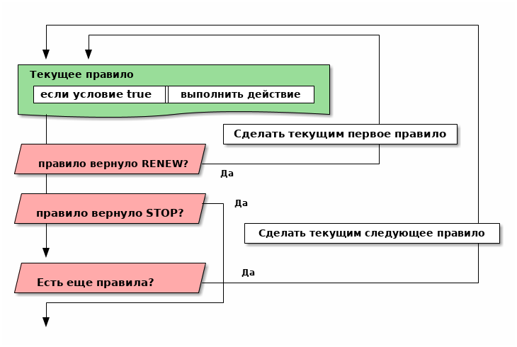
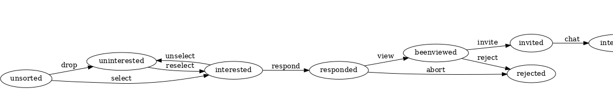

Автоматический поиск работы
Table of Contents
Интро
Большинство программистов ищут (или искали) работу на профильных сайтах и каждый из них хоть раз задумывался об автоматизации рутинных операций.
Я решил пойти дальше и разработал экспертную систему, которая ищет работу за меня в автоматическом режиме. Здесь я опишу как она устроена и работает.
Для ознакомления "без глубокого погружения" стоит читать разделы:
- Базовые концепции
- Экспертная система
- Жизненный цикл вакансии
Базовые Концепции
Для понимания того, что написано ниже, достаточно разобраться с тремя вещами:
Источник вакансий
Источник вакансий - это сущность, откуда можно получать вакансии. Например, это может быть сайт HeadHunter.ru, целевое приглашение HR-а работодателя в LinkedIn, письмо в электронной почте или даже автоматически найденный пост в блоге.
Генератор вакансий
Генератор вакансий - это функция, которая при каждом своем вызове возвращает вакансию. Это наш способ получать вакансии по одной. Внутри генератора есть какое-то состояние, чтобы каждый раз отдавать новую вакансию.
Генератор вакансии - это полупредикат, следующей вакансии может не быть (кончились),
поэтому мы передаем ему два продолжения - success и failure. Оба продолжения
принимают один параметр. Если вакансия есть, она будет передана в success, иначе
ошибка будет передана в failure.
Фабрика генераторов
Фабрика - это функция, которой надо дать источник вакансий и тогда она вернет функцию-генератор. Иногда фабрике может понадобится еще какие-то данные, специфичные для каждого источника. Поэтому я оформляю фабрику как обобщенную функцию с неопределенным числом аргументов:
(defgeneric factory (vac-src &optional &key &allow-other-keys) (:documentation "Return the function-generator of vacancyes"))
Пример использования
Этого хватит для того, чтобы сделать функцию, которая получает от фабрики генератор и вызывает его 100 раз, или пока не наткнется на ошибку (например закончились вакансии). Полученные вакансии печатаются:
(defun print-all-teasers () (let ((generator (factory 'hh :some-key-param some-value ....))) (loop :for i :from 1 :to 100 :do (funcall generator (lambda (tag msg data) ;; failure (dbg "ERROR: ~A - ~A~%~A" tag msg (length data)) (return-froom print-all-teasers nil)) (lambda (x) ;; success (dbg "~%~A~%" (bprint x)))))))
Разумеется можно сделать нечто более умное, чем просто распечатать тизер вакансии. Об этом подробнее рассказывается в разделе "Экспертная система" этого документа.
Специализация дла HeadHunter
Все что выше было определено довольно абстрактно. Теперь конкретизируем абстракции для одного из возможных источников:
Фабрика генераторов для HeadHunter
(defmethod factory ((vac-src (eql 'hh)) &optional &key teaser-url idx ref cookie-jar src-account get-page-fn split-teasers-fn parse-teaser-fn (teasers nil) &allow-other-keys) (dbg ":factory:") <<hh_process_around>> <<hh_process>> <<hh_vac_gen>> )
Генератор вакансий для HeadHunter
Генератор вакансий для HeadHunter хранит внутри себя некоторое количество тизеров
вакансий. Каждый раз, когда генератор бывает вызван, он берет очередной тизер,
прогоняет его через функцию success и возвращает результат (если результат не nil,
иначе - обрабатываем следующий тизер). Функция success превращает тизеры в
вакансии и будет описана позднее, сейчас достаточно сказать, что она возвращает
nil, если тизер был отброшен.
Если тизеры вакансий закончились, генератор вызывает load-next-teasers-page, чтобы
загрузить в себя тизеры со следующей по счету страницы поисковых результатов сайта. Для
этого генератор хранит url и idx этой страницы в своем состоянии.
;; возвращает функцию-генератор в лексическом замыкании, ;; которая принимает два продолжения (alexandria:named-lambda hh-get-vacancy (failure success) (labels ( ;; Загружает следующую страницу тизеров в TEASERS <<hh_load_next_teasers_page>> ;; Возвращает следующий тизер из пула тизеров. ;; Если пул пуст, то вызывает LOAD-NEXT-TEASER-PAGE чтобы наполнить его <<hh_get_teaser>> ) (tagbody get-new-teaser (let* ((teaser (get-teaser)) (current-vacancy (funcall success teaser))) (if (null current-vacancy) (go get-new-teaser) (return-from hh-get-vacancy current-vacancy))))))
Функция, возвращающая следующий тизер вакансии
Эта функция извлекает очередной тизер и преобразует его с помощью функции
parse-teaser-fn, чтобы получить plist. Если teasers пуст - она вызывает
load-next-teasers-page для получения следующей порции.
(GET-TEASER () (dbg ":get-teaser:") (when (equal 0 (length teasers)) (load-next-teasers-page)) (prog1 (funcall parse-teaser-fn (car teasers)) (setf teasers (cdr teasers))))
Функция, загружающая следующие тизеры
Эта функция вызывается, когда генератор вакансий обнаруживает, что у него в teasers
закончились тизеры вакансий. Она загружает следующую страницу поисковой выдачи и
применяет к ней функцию split-teasers-fn чтобы получить список тизеров, который и
будет сохранен в teasers.
(LOAD-NEXT-TEASERS-PAGE () (dbg ":load-next-teasers-page: (page=~A)" idx) (funcall get-page-fn (format nil teaser-url idx) cookie-jar src-account ref (lambda (tag msg data) ;; failure (dbg ":load-next-teaser-page:error: ~A" msg) (funcall failure tag msg data)) (lambda (teasers-page-content new-cookie-jar new-ref) ;; success (setf cookie-jar new-cookie-jar) (setf ref new-ref) (setf teasers (funcall split-teasers-fn teasers-page-content)) (incf idx) (when (equal 0 (length teasers)) (funcall failure 'no-more-teasers "no more teasers" nil)))))
- Функция получения веб-страниц
Эта функция обеспечивает получение веб-страниц с сайта HeadHunter, для этого мы передаем ее как параметр в фабрику.
Кроме того, она пытается залогиниться на сайт, поэтому мы также передаем в фабрику объект-аккаунт, содержащий все необходимое.
Внутри себя она вызывает
hh-is-loggedиhh-reсovery-login(defparameter *user-agent* "Mozilla/5.0 (X11; Ubuntu; Linux x86_64; rv:35.0) Gecko/20100101 Firefox/35.0") (defparameter *additional-headers* `(("Accept" . "text/html,application/xhtml+xml,application/xml;q=0.9,*/*;q=0.8") ("Accept-Language" . "ru-RU,ru;q=0.8,en-US;q=0.5,en;q=0.3") ("Accept-Charset" . "utf-8"))) (defparameter *need-start* t) (defun hh-get-page (url cookie-jar src-account referer failure success) "Получение страницы" ;; Если ни одного запроса еще не было - сделаем запрос к главной и снимем флаг (when *need-start* (drakma:http-request "https://spb.hh.ru/" :user-agent *user-agent* :redirect 10 :force-binary t :cookie-jar cookie-jar) (setf referer "https://spb.hh.ru/") (setf *need-start* nil)) ;; Делаем основной запрос по урлу из параметров, сохраняя результат ;; в response и обновляя cookie-jar (let ((response "") (repeat-cnt 0)) (tagbody repeat (multiple-value-bind (body-or-stream status-code headers uri stream must-close reason-phrase) (drakma:http-request url :user-agent *user-agent* :force-binary t :cookie-jar cookie-jar :redirect 10 :additional-headers (append *additional-headers* `(("Referer" . ,referer)))) (dbg ":hh-get-page: ~A : ~A" status-code url) (if (equal 404 status-code) (funcall failure 'hh-404-error url (flexi-streams:octets-to-string body-or-stream :external-format :utf-8)) (setf response (flexi-streams:octets-to-string body-or-stream :external-format :utf-8)))) ;; Если мы не залогинены: (unless (is-logged response) ;; Проверяем, не превышено ли кол-во попыток восстановления (if (>= repeat-cnt 3) ;; Если их больше трех - сигнализируем ошибку (funcall failure 'max-recovery-login "max recovery login cnt" response) ;; Иначе пытаемся восстановить сессию (progn (hh-recovery-login src-account (lambda (tag msg data) ;; recovery failure ;; выводим сообщение и ничего не делаем (3 попытки) (dbg "hh-get-page :: recovery failure")) (lambda (recovery-cookie-jar html) (setf response html) (setf cookie-jar recovery-cookie-jar) (setf referer "https://spb.hh.ru/account/login"))) ;; Увеличиваем счетчик попыток (incf repeat-cnt) ;; Пробуем загрузить страницу снова (go repeat))))) ;; Возвращаем значения в success-продолжение (funcall success response cookie-jar url)))
- Функция проверки авторизации
(defun is-logged (html) "Проверяем наличие в html блока 'Войти'" (let ((res (not (contains html "data-qa=\"mainmenu_loginForm\">Войти</div>")))) (dbg ":is-logged: ~A" res) res))
- Функция восстановления авторизации
Мы хотим в случае обрыва сессии перелогиниваться прозрачно для всего остального кода.
Для этих целей мы передаем в
hh-recovery-loginобъектsrc-account, который содержит все необходимое, чтобы восстановить сессию: логин, пароль и ФИО пользователя, по которому мы определяем, что успешно залогинились.Мы также передаем два продолжения.
Продолжение
successвызывается в случае успешного логина и получает:- новый
cookie-jar, который нужно использовать для работы внутри сессии html
Продолжение
failureвызывается при неуспехе и ему передается:tagошибкиmsg-сообщение для выводаdata- html-данные, которые представляют собой полученный ответ
;; Вспомогательная функция (defun get-cookies-alist (cookie-jar) "Получаем alist с печеньками из cookie-jar" (loop :for cookie :in (drakma:cookie-jar-cookies cookie-jar) :append (list (cons (drakma:cookie-name cookie) (drakma:cookie-value cookie))))) (defun hh-recovery-login (src-account failure success) (dbg ":hh-recovery-login:") ;; Сначала заходим на главную как будто первый раз, без cookies (setf drakma:*header-stream* nil) (let* ((start-uri "https://spb.hh.ru/") (cookie-jar (make-instance 'drakma:cookie-jar)) (additional-headers *additional-headers*) (response (drakma:http-request start-uri :user-agent *user-agent* :additional-headers additional-headers :force-binary t :cookie-jar cookie-jar :redirect 10))) ;; Теперь попробуем использовать cookies для логина ;; GMT=3 ;; _xsrf= ;; hhrole=anonymous ;; hhtoken= ;; hhuid= ;; regions=2 ;; unique_banner_user= ;; И заходим с вот-таким гет-запросом: ;; username=avenger-f@ya.ru ;; password=jGwPswRAfU6sKEhVXX ;; backurl=https://spb.hh.ru/ ;; remember=yes ;; action="Войти" ;; _xsrf= ;; Для отладочной печати: ;; (setf drakma:*header-stream* *standard-output*) (let* ((post-parameters `(("username" . ,(src_login src-account)) ("password" . ,(src_password src-account)) ("backUrl" . "https://spb.hh.ru/") ("remember" . "yes") ("action" . "%D0%92%D0%BE%D0%B9%D1%82%D0%B8") ("_xsrf" . ,(cdr (assoc "_xsrf" (get-cookies-alist cookie-jar) :test #'equal))))) (xsrf (cdr (assoc "_xsrf" (get-cookies-alist cookie-jar) :test #'equal))) (cookie-jar-2 (make-instance 'drakma:cookie-jar :cookies (append (list (make-instance 'drakma:cookie :name "GMT" :value "3" :domain "spb.hh.ru") (make-instance 'drakma:cookie :name "_xsrf" :value xsrf :domain "spb.hh.ru")) (remove-if #'(lambda (x) (equal "crypted_id" (drakma:cookie-name x))) (drakma:cookie-jar-cookies cookie-jar))))) (response-2 (drakma:http-request "https://spb.hh.ru/account/login" :user-agent *user-agent* :method :post :parameters post-parameters :additional-headers (append *additional-headers* `(("Referer" . ,start-uri))) :cookie-jar cookie-jar-2 :force-binary t :redirect 10)) (html (flexi-streams:octets-to-string response-2 :external-format :utf-8))) (if (contains html (src_fio src-account)) (funcall success cookie-jar-2 html) (funcall failure 'login-failed "login failed" html)))))
- новый
Функции преобразования
Эти функции и макросы нужны для преобразования дерева s-выражений. Они используются в следующих разделах. Мы будем включать их единым блоком
<<maptree_transform>> <<make_transform>> <<make_extract>>
Трансформация дерева
Описание вакансии (или ее тизера), после преобразования из html, представляет из себя дерево, в котором нам важна структура, так как требования, обязанности и прочее описываются списком. В этом списке много лишнего форматирования, для удаления которого нам необходимо уметь преобразовывать (трансформировать) дерево.
- Maptree-if
Функция
maptree-if- рекурсивный преобразователь, который возвращает новое дерево, рекурсивно вызывая аргументtransformerнаsub-tree, которые удовлетворяют аргументуpredicate.Аргумент
predicateдолжен быть лямбда-функцией, которая принимает на входsubtreeи возвращаетTилиNILАргумент
transformerдолжен быть лямбда-функцией, которая принимает на входsubtreeи возвращаетatomилиsubtreeв первом параметре, а во втором может возвратить функциюcontrol. Если эта функция возвращена, тогда дерево возвращается с замененнымtransformer-ом узлами по следующему алгоритму:(funcall control #'(lambda (x) (maptree-if predicate transformer x)) transformed-tree)В противном случае оно возвращается как есть.
Собственно функция
maptree-if, которую мы помещаем в утилиты:(defun maptree-if (predicate transformer tree) (multiple-value-bind (t-tree control) (if (funcall predicate tree) (funcall transformer tree) (values tree #'mapcar)) (if (and (consp t-tree) control) (funcall control #'(lambda (x) (maptree-if predicate transformer x)) t-tree) t-tree)))
Несколько примеров работы:
;; Нерекурсивная замена (maptree-if #'(lambda (x) (and (consp x) (eq (car x) 'ping))) #'(lambda (x) `(pong ,@(cdr x))) '(progn (ping (ping (ping 1))))) ;; => (PROGN (PONG (PING (PING 1)))) ;; Рекурсивная замена (maptree-if #'(lambda (x) (and (consp x) (eq (car x) 'ping))) #'(lambda (x) (values `(pong ,@(cdr x)) #'mapcar)) '(progn (ping (ping (ping 1))) ping)) ;; => (PROGN (PONG (PONG (PONG 1))))
- Maptree-transform
maptree-transform- это аналогmaptree-if, но здесь одна функция (predicate-transformer) и ищет и трансформирует узел дерева:(defun maptree-transform (predicate-transformer tree) (multiple-value-bind (t-tree control) (aif (funcall predicate-transformer tree) it (values tree #'mapcar)) (if (and (consp t-tree) control) (funcall control #'(lambda (x) (maptree-transform predicate-transformer x)) t-tree) t-tree))) ;; mtm - синтаксический сахар для maptree-transform (defmacro mtm (transformer tree) (let ((lambda-param (gensym))) `(maptree-transform #'(lambda (,lambda-param) (values (match ,lambda-param ,transformer) #'mapcar)) ,tree)))
Макрос для создания преобразователей
Этот макрос формирует функции вида transform-*, которые осуществляют преобразование
дерева в соответствии с шаблоном, переданным в body. Функция в любом случае
возвращает дерево, преобразованное или нет.
(defmacro make-transform ((name) &body body) (let ((param (gensym))) `(defun ,(intern (format nil "TRANSFORM-~A" (string-upcase (symbol-name name)))) (,param) (mtm ,@body ,param))))
Макрос для создания экстракторов
Этот макрос формирует функции вида extract-*, которые извлекают из дерева ветвь,
совпавшую с шаблоном, переданным в body. Если такой ветви не нашлось, функция
возвращает nil.
(defmacro make-extract ((name retlist) &body body) (let ((param (gensym))) `(defun ,(intern (format nil "EXTRACT-~A" (string-upcase (symbol-name name)))) (,param) (block subtree-extract (mtm (,@body (return-from subtree-extract ,retlist)) ,param) nil)))) ;; (print ;; (macroexpand-1 '(make-extract (compensation `(:compensation ,compensation)) ;; `("vacancy-compensation" NIL ,compensation))))
Разделение тизеров вакансий
На этом этапе у нас на входе есть страницы поисковой выдачи, которые содержат тизеры
вакансий. Нам нужно как можно скорее превратить их в список отдельных тизеров. Для
этого функция hh-split-teasers (которую мы передаем в фабрику, чтобы параметризовать
генератор вакансий) делает следующее:
- преобразует html-код страницы в дерево s-выражений
- извлекает из этого дерева часть, которая содержит поисковую выдачу
- преобразует элементы форматирования, таких как
divиspanв "говорящие" элементы дерева для повышения читаемости (названия для преобразования извлекаются из атрибутовclassиdata-qa. - трансформирует дерево и извлекает из него список тизеров
- трасформирует элементы со вставленной рекламой и удаляет их
Таким образом мы для каждой страницы поисковой выдачи получаем список необработанных тизеров вакансий. В этих тизерах s-выражения, соответствующие html-коду еще не преобразованы в plist, с которым удобно работать.
<<html_to_tree>> <<extract_search_results>> <<maptreefilter>> (defun advertp (teaser) (equal teaser '(:GARBAGE "advert"))) (defparameter *last-parse-data* nil) (defun hh-split-teasers (html) "Получение списка вакансий из html" (dbg ":hh-split-teasers:") (setf *last-parse-data* html) (->> (html-to-tree html) (extract-search-results) (maptreefilter) (transform-vacancy-serp) (car) (transform-special) (remove-if #'advertp))) ;; (print (hh-split-teasers *last-parse-data*)) ;; (print *last-parse-data*)
Парсер html в s-exps
Чтобы получить вакансии со страниц поисковой выдачи - напишем парсер, который переведет
полученный html в более удобное лисп-дерево (html-to-tree). Тут же напишем и обратное
преобразование - может пригодиться.
(defun html-to-tree (html) (html5-parser:parse-html5-fragment html :dom :xmls)) (defun tree-to-html (tree &optional (step 0)) (macrolet ((indent () `(make-string (* 3 step) :initial-element #\Space))) (labels ((paired (subtree) (format nil "~A<~A~A>~%~A~4:*~A</~A>~%" (indent) (car subtree) (format nil "~:[~; ~1:*~{~A~^ ~}~]" (mapcar #'(lambda (attr) (let ((key (car attr)) (val (cadr attr))) (format nil "~A=\"~A\"" key val))) (cadr subtree))) (format nil "~{~A~}" (progn (incf step) (let ((ret (mapcar #'(lambda (x) (subtree-to-html x step)) (cddr subtree)))) (decf step) ret))))) (singled (subtree) (format nil "~A<~A~A />~%" (indent) (car subtree) (format nil "~:[~; ~1:*~{~A~^ ~}~]" (mapcar #'(lambda (attr) (let ((key (car attr)) (val (cadr attr))) (format nil "~A=\"~A\"" key val))) (cadr subtree))))) (subtree-to-html (subtree &optional (step 0)) (cond ((stringp subtree) (format nil "~A~A~%" (indent) subtree)) ((numberp subtree) (format nil "~A~A~%" (indent) subtree)) ((listp subtree) (let ((tag (car subtree))) (cond ((or (equal tag "img") (equal tag "link") (equal tag "meta")) (singled subtree)) (t (paired subtree))))) (t (format nil "[:err:~A]" subtree))))) (reduce #'(lambda (a b) (concatenate 'string a b)) (mapcar #'(lambda (x) (subtree-to-html x step)) tree)))))
Экстрактор поисковых результатов
Затем нам понадобится отделить собственно поисковые результаты, с которыми будем работать:
(defun extract-search-results (tree) (block subtree-extract (mtm (`("div" (("data-qa" "vacancy-serp__results")) ,@rest) (return-from subtree-extract rest)) tree)))
Фильтр-преобразователь дерева
Поисковые результаты представляют собой список деревьев, внутри которых много html-кода, относящегося к разметке. Из-за этого их сложно читать и анализировать. Но можно преобразовать эти деревья в более удобные для анализа, следуя следующему алгоритму:
- Проходя по каждому элементу дерева
- Если элемент является списком
- Если элемент - это '("target" "blank"), то удаляем его, записывая остаток списка (cdr) на его место, потому что этот элемент не несет никакой нужной нам информации.
- Если элемент начинается с "script" (т.е. мы обоснованно предполагаем, что это тег <script>, потому что нигде не употребляется атрибут "script"), то поступаем аналогично, удаляя его
- Если элемент начинается с "div" "span" или "a", то для начала отделим атрибуты от
его содержимого.
- Если существует атрибут "data-qa", то он станет новым именем элемента, в
противном случае
- Если существует атрибут "class", то он будет новым именем элемента.
- Если есть новое имя элемента:
- Существуют блоки с именами, которые нам полностью неинтересны, поэтому мы
можем прямо здесь заменить их на их строковые имена, чтобы сделать все более
читаемым. Если мы нашли такой блок - то сделаем это. В противном случае:
- Удалим атрибуты "data-qa" и "class" из списка атрибутов
- Запишем новое имя элемента на место "div" или "span"
- Запишем обновленные атрибуты на место старых
- Существуют блоки с именами, которые нам полностью неинтересны, поэтому мы
можем прямо здесь заменить их на их строковые имена, чтобы сделать все более
читаемым. Если мы нашли такой блок - то сделаем это. В противном случае:
- Если существует атрибут "data-qa", то он станет новым именем элемента, в
противном случае
- Если элемент является списком
Реализуем этот алгоритм. Для поиска атрибутов будем использовать функцию get-attr,
которая превращает атрибуты в plist и ищет в нем.
(defun attrs-to-plist (attrs) (mapcan #'(lambda (x) (list (intern (string-upcase (car x)) :keyword) (cadr x))) attrs)) ;; (attrs-to-plist '(("href" "/employer/3127") ("class" "bloko-link bloko-link_secondary") ;; ("data-qa" "vacancy-serp__vacancy-employer"))) ;; => (:HREF "/employer/3127" :CLASS "bloko-link bloko-link_secondary" :DATA-QA ;; "vacancy-serp__vacancy-employer") (defun plist-to-attrs (attrs) (loop :for attr :in attrs :by #'cddr :collect (list (string-downcase (symbol-name attr)) (getf attrs attr)))) ;; (plist-to-attrs '(:HREF "/employer/3127" :CLASS "bloko-link bloko-link_secondary" :DATA-QA ;; "vacancy-serp__vacancy-employer")) ;; => (("href" "/employer/3127") ("class" "bloko-link bloko-link_secondary") ;; ("data-qa" "vacancy-serp__vacancy-employer")) (defun maptreefilter (tree) (when (listp tree) (when (and (listp (car tree)) (equal '("target" "_blank") (car tree))) (setf tree (cdr tree))) (when (and (listp (car tree)) (equal "script" (caar tree))) (setf tree (cdr tree))) (when (and (listp (car tree)) ;; fix error if car is not list (or (equal "div" (caar tree)) (equal "span" (caar tree)) (equal "a" (caar tree)) (equal "td" (caar tree)) (equal "th" (caar tree)) (equal "table" (caar tree)) )) (let ((attrs (attrs-to-plist (cadar tree))) (rest (cddar tree)) (name nil)) ;; data-qa is primary target for new name (aif (getf attrs :data-qa) (progn (setf name it)) ;; else: class is secondary target for new name (aif (getf attrs :class) (progn (setf name it)))) (when name (if (or (equal name "search-result-description__item") (equal name "search-result-item__control")) ;; Убиваем ненужное, если оно есть (setf (car tree) name) ;; else (progn (remf attrs :data-qa) (remf attrs :class) (setf (caar tree) name) ;; new name (setf (cadar tree) (plist-to-attrs attrs)) ;; new attrs )))))) (cond ((null tree) nil) ((atom tree) tree) (t (cons (maptreefilter (car tree)) (maptreefilter (cdr tree))))))
Разбор тизеров вакансий
Эта функция разбирает html-код страницы выдачи тизеров. Мы передаем ее в фабрику, чтобы параметризовать генератор, который фабрика вернет.
Функция hh-parse-teasers получает на вход html страницы поисковой выдачи
и превращает его в список вакансий. Для этого она выполняет ряд операций:
- Преобразование html-кода в дерево s-выражений
- Извлечение из этого дерева части, которая содержит поисковую выдачу
- Преобразование элементов форматирования, таких как
divиspanв "говорящие" элементы дерева для повышения читаемости (названия для преобразования извлекаются из атрибутовclassиdata-qa. - Применение набора трансформаций для получения списка тизеров в виде plists.
Технические подробности о трансформациях - далее в разделе: Трансформация дерева
Если в тизере указана зарплата, мы также получаем
- Валюту зарплаты (3х-буквенный идентификатор)
- Сумму
- Текстовое выражение, содержащее "от" или "от и до". Бывают также и варианты "от 100000 до 200000 до вычета НДФЛ".
Иногда HeadHunter синдицирует вакансии с других платформ, к примеру с CAREER.RU, тогда в вакансии может отсутствовать работодатель.
<<parse_salary_text>> <<parse_salary_currency>> <<teaser_transformors>> <<plistp>> <<my_merge_plist>> <<tree_plist_p>> <<linearize_teaser>> (defparameter *last-parse-teaser* nil) (defun hh-parse-teaser (teaser) "Получение списка вакансий из html" (dbg ":hh-parse-teaser:") (setf *last-parse-teaser* teaser) (->> (transform-responder teaser) (transform-rejecter) (transform-vacancy-title) (transform-vacancy-archived) (transform-serp-item-title) (transform-schedule) (transform-employer) (transform-employer-anon) (transform-career) (transform-metro) (transform-metro-empty) (transform-address) (transform-meta-info) (transform-insider-teaser) (transform-responsibility) (transform-requirement) (transform-serp-item-info) (transform-compensation) (transform-logo) (transform-item-sidebar-separator) (transform-item-sidebar) (transform-item-sidebar) ;; sidebar in sidebar (transform-serp-item-row) (transform-controls-item) (transform-date) (transform-controls-last) (transform-trigger-button) (transform-row-controls) (transform-serp-premium) (transform-serp-vacancy) (transform-reform-meta-info) (linearize-teaser) )) ;; (print (hh-parse-teaser *last-parse-teaser*)) ;; (print *last-parse-teaser*)
Функция для разбора зарплаты
Эта функция нужна преобразователям тизеров и вакансий. Она получает на вход текстовое описание зарплатного предложения и возвращает минимальное, максимальное значение и коммент (например для описания "от 100000 до 200000 до вычета НДФЛ" будет возвращено 100000, 200000, "до вычета НДФЛ").
(defun parse-salary-text (salary-text) (let ((salary-min nil) (salary-max nil) (comment "")) (multiple-value-bind (match-p result) (ppcre:scan-to-strings "(от (\\d+))(.*)" salary-text) (when match-p (setf salary-min (parse-integer (aref result 1))) (setf salary-text (string-left-trim '(#\Space) (aref result 2))))) (multiple-value-bind (match-p result) (ppcre:scan-to-strings "(до (\\d+))(.*)" salary-text) (when match-p (setf salary-max (parse-integer (aref result 1))) (setf salary-text (string-left-trim '(#\Space) (aref result 2))))) (setf comment salary-text) (values salary-min salary-max comment)))
Функция для разбора валюты
Эта функция возвращает трехбуквенный код код валюты и измененное значение
salary-text.
(defun parse-salary-currency (salary-text currency) (cond ((equal currency "RUR") (setf salary-text (ppcre:regex-replace-all " руб." salary-text ""))) ((equal currency "USD") (setf salary-text (ppcre:regex-replace-all " USD" salary-text ""))) ((equal currency "EUR") (setf salary-text (ppcre:regex-replace-all " EUR" salary-text ""))) ((equal currency "UAH") (setf salary-text (ppcre:regex-replace-all " грн." salary-text ""))) ((equal currency nil) 'nil) (t (progn (print currency) (err 'unk-currency)))) (values currency salary-text))
Набор преобразователей для тизеров
Эти макросы по шаблону преобразуют тизер вакансии в plist
(make-transform (vacancy-serp) (`("vacancy-serp" NIL ,@rest) rest)) (make-transform (responder) (`("vacancy-serp__vacancy_responded" (("href" ,_)) "Вы откликнулись") `(:status "responded"))) (make-transform (rejecter) (`("vacancy-serp__vacancy_rejected" (("href" ,_)) "Вам отказали") `(:status "rejected"))) (make-transform (vacancy-title) (`("vacancy-serp__vacancy-title" (("href" ,href) ,@rest) ,title) (if (search "hhcdn.ru" href) `(:href ,href :name ,title :archived nil) (let ((id (parse-integer (car (last (split-sequence:split-sequence #\/ href)))))) `(:src-id ,id :href ,href :name ,title))))) (make-transform (vacancy-archived) (`("strong" (("data-qa" "vacancy-serp__vacancy_archived")) "Вакансия была перенесена в архив") `(:archived t))) (make-transform (schedule) (`("vacancy-serp__vacancy-work-schedule" NIL ,schedule) `(:schedule ,schedule))) (make-transform (responsibility) (`("vacancy-serp__vacancy_snippet_responsibility" NIL ,responsibility) `(:responsibility ,responsibility))) (make-transform (requirement) (`("vacancy-serp__vacancy_snippet_requirement" NIL ,requirement) `(:requirement ,requirement))) (make-transform (insider-teaser) (`("vacancy-serp__vacancy-interview-insider" (("href" ,insider)) "Посмотреть интервью о жизни в компании") `(:insider ,insider))) (make-transform (serp-item-info) (`("vacancy-serp-item__info" NIL ,@rest) `(:item-info ,@(remove-if (lambda (x) (or (equal x " (") (equal x ")"))) rest)))) (make-transform (serp-item-row) (`("vacancy-serp-item__row" NIL ,@rest) `(:row ,@rest))) (make-transform (employer) (`(,container NIL ("vacancy-serp__vacancy-employer" (("href" ,href)) ,emp-name) ,@rest) `(:emp-name ,emp-name :emp-href ,href :emp-id ,(parse-integer (car (last (split-sequence:split-sequence #\/ href))) :junk-allowed t)))) (make-transform (employer-anon) (`("search-result-item__company" NIL ,anon ("bloko-link" (("href" ,_)) ("bloko-icon bloko-icon_done bloko-icon_initial-action" NIL))) `(:emp-name ,anon :anon t))) (make-transform (date) (`("vacancy-serp__vacancy-date" NIL ("vacancy-serp-item__publication-date" NIL ,date)) `(:date ,date))) (make-transform (career) (`("vacancy-serp__vacancy_career" NIL " • CAREER.RU") `(:garbage "career"))) (make-transform (metro) (`("metro-station" NIL ("metro-point" (("style" ,color))) ,metro) `(:metro ,metro :color ,color))) (make-transform (metro-empty) (`("metro-station" NIL ("metro-point" (("style" ,color)))) `(:garbage "metro-empty"))) (make-transform (address) (`("vacancy-serp__vacancy-address" NIL ,address ,@rest) `((:address ,address) ,@rest))) (make-transform (meta-info) (`("vacancy-serp-item__meta-info" NIL ,@rest) `(:meta-info ,@rest))) (make-transform (compensation) (`("vacancy-serp__vacancy-compensation" NIL ("meta" (("itemprop" "salaryCurrency") ("content" ,currency))) ("meta" (("itemprop" "baseSalary") ("content" ,salary))) ,salary-text) (let ((currency currency) (salary-text (ppcre:regex-replace-all " " salary-text "")) (salary-min nil) (salary-max nil)) (multiple-value-bind (currency salary-text) (parse-salary-currency salary-text currency) (multiple-value-bind (salary-min salary-max comment) (parse-salary-text salary-text) (when (null salary-min) (setf salary-min salary-max)) (when (null salary-max) (setf salary-max salary-min)) `(:currency ,currency :salary ,(parse-integer salary) :salary-text ,salary-text :salary-min ,salary-min :salary-max ,salary-max)))))) (make-transform (logo) (`("vacancy-serp__vacancy-employer-logo" (("href" ,_)) ("img" (("src" ,logo) ("alt" ,_) ("class" "vacancy-serp-item__logo")))) `(:logo ,logo))) (make-transform (item-sidebar-separator) ((or `("vacancy-serp-item__sidebar" NIL) `("vacancy-serp-item__sidebar" NIL " ")) `(:garbage "sidebar-separator"))) (make-transform (item-sidebar) (`("vacancy-serp-item__sidebar" NIL ,@rest) `(:item-sidebar ,@rest))) (make-transform (serp-item-title) (`("vacancy-serp-item__title" NIL ,contents) `(:item-title ,contents))) (make-transform (controls-item) (`("vacancy-serp-item__controls-item" NIL ,@rest) `(:garbage "controls-item"))) (make-transform (controls-last) (`("vacancy-serp-item__controls-item vacancy-serp-item__controls-item_last" NIL ,@rest) `(:garbage "controls-last"))) (make-transform (trigger-button) (`("HH-VacancyResponseTrigger-Button" NIL ,@rest) `(:garbage "trigger-button"))) (make-transform (row-controls) (`("vacancy-serp-item__row vacancy-serp-item__row_controls" NIL ,@rest) `(:row-controls ,@rest))) (make-transform (serp-premium) (`("vacancy-serp__vacancy vacancy-serp__vacancy_premium" NIL ,@rest) `(:premium ,@rest))) (make-transform (serp-vacancy) (`("vacancy-serp__vacancy" NIL ,@rest) `(:vacancy ,@rest))) (make-transform (special) ((or `("vacancy-serp-special vacancy-serp-special_wide" NIL) `("vacancy-serp-special vacancy-serp-special_medium" NIL)) `(:garbage "advert"))) ;; reforming (make-transform (reform-meta-info) (`(:META-INFO ,@rest) (if (not (listp (car rest))) `(:garbage "bad-meta-info") `(:meta-info ,@(->> (car rest) (mapcar #'(lambda (x) (if (not (listp x)) `(:garbage "и еще metro") x))) (remove-if (lambda (x) (equal (car x) :garbage))))))))
Функция-предикат для plists
Это функция-предикат, которая возвращает свой параметр, если он является
правильным plist и NIL в противном случае.
(defun plistp (param) "Test wheather PARAM is a properly formed pparam." (when (listp param) (loop :for rest :on param :by #'cddr :unless (and (keywordp (car rest)) (cdr rest)) :do (return nil) :finally (return param))))
Функция слияния plists
Это функция, которая правильным образом сливает вместе два plist-а
(defun my-merge-plists (p1 p2) (loop with notfound = '#:notfound for (indicator value) on p1 by #'cddr when (eq (getf p2 indicator notfound) notfound) do (progn (push value p2) (push indicator p2))) p2)
Функция предикат tree-plists
Это функция возвращает T если список, переданный в параметре является правильным
plist-деревом.
(defun tree-plist-p (pl) "Returns T if PL is a plist (list with alternating keyword elements). " (cond ((null pl) t) ((and (listp pl) (keywordp (car pl)) (cdr pl)) (tree-plist-p (cddr pl))) ((and (listp pl) (listp (car pl))) (and (tree-plist-p (car pl)) (tree-plist-p (cdr pl)))) (t (progn ;; (print pl) nil))))
Линеаризатор тизера
Эта функция превращает тизер в линейный plist
(defun linearize-teaser (vacancy) (cond ((not (listp vacancy)) (err (format nil "Wrong vacancy: ~A" vacancy))) ((not (keywordp (car vacancy))) (mapcar #'linearize-teaser (cdr vacancy))) ((member (car vacancy) '(:status :date :garbage :src-id :href :emp-name :address :metro :currency :responsibility :requirement :logo :schedule :insider)) vacancy) ((member (car vacancy) '(:premium :vacancy :row-controls :row :item-info :item-title :meta-info :item-sidebar)) (mapcan #'linearize-teaser (remove-if #'(lambda (x) (equal (car x) :garbage)) (cdr vacancy)))) (t (err (format nil "Unknown vacancy key: ~A" (car vacancy))))))
Сбор тизеров
Со всем вышеперечисленным, чтобы получить и распечатать первые 100 тизеров вакансий нам нужно написать следующее:
<<creds>> (let ((gen (factory 'hh :teaser-url *hh-teaser-url* :idx 0 :ref "https://spb.hh.ru" :cookie-jar (make-instance 'drakma:cookie-jar) :src-account *hh-account* :get-page-fn #'hh-get-page :split-teasers-fn #'hh-split-teasers :parse-teaser-fn #'hh-parse-teaser))) (loop :for i :from 1 :to 100 :do (funcall gen (lambda (tag msg data) ;; failure (dbg "ERROR: ~A - ~A~%~A" tag msg (length data)) (error tag)) (lambda (x) (dbg "~%~A~%" (bprint x))))))
Необходимые входные данные
(defclass src-account () ((id :initarg :id :accessor id) ;; идентификатор пользователя, владеющего логином (user_id :initarg :user_id :accessor user_id) ;; идентификатор источника ("hh" - для headhunter.ru :accessor "hh" ) (src_source :initarg :src_source :accessor src_source) ;; логин пользователя на источнике (src_login :initarg :src_login :accessor src_login) ;; пароль пользователя на источнике (src_password :initarg :src_password :accessor src_password) ;; ФИО пользователя, чтобы определить что вход в профиль (src_fio :initarg :src_fio :accessor src_fio))) (defparameter *hh-account* (make-instance 'src-account :user_id 1 :src_source "hh" :src_login "avenger-f@yandex.ru" :src_password "jGwPswRAfU6sKEhVXX" :src_fio "Михаил Михайлович Глухов")) (defparameter *hh-teaser-url* "https://spb.hh.ru/search/vacancy?clusters=true&items_on_page=100&enable_snippets=true&specialization=1&area=2&page=~A")
Экспертная система
Конечно, собрать все тизеры вакансий - этого недостаточно. Я бы хотел получить вакансию
целиком, чтобы потом в отношении неё что-то решать. Однако, тизер часто дает достаточно
информации, чтобы отказаться продолжать. В Common Lisp есть удобный механизм
:around-методов, который мы можем использовать, чтобы вызывать или не вызывать
основной метод, в зависимости от того, что мы найдем внутри тизера. Например, здесь мы
отбрасываем тизеры без полей src-id или salary:
(defmethod hh-process :around (vac) (dbg ":process-teaser :around:") (aif (cond ((null (getf vac :src-id)) (dbg "no src-id")) ((null (getf vac :salary)) (dbg "no salary")) (t vac)) (call-next-method it) nil))
Если же :around-метод вызывает основной, то мы можем заняться получением страницы
вакансии и разбором её содержимого:
(defmethod hh-process (vac) (dbg ":process-teaser:") (let ((vac-uri (format nil "https://spb.hh.ru/vacancy/~A" (getf vac :src-id))) (ref-uri (format nil *hh-teaser-url* 1))) (funcall get-page-fn vac-uri cookie-jar src-account ref-uri (lambda (tag msg data) ;; failure (dbg ":hh-process:error: ~A" msg) (funcall failure tag msg data)) (lambda (vac-page-content new-cookie-jar new-ref) ;; success (setf cookie-jar new-cookie-jar) (let ((vacancy (funcall parse-vacancy-fn vac-page-content))) (my-merge-plists vac vacancy))))))
Мы поместим эти методы внутрь фабрики, рядом с генератором, чтобы они могли использовать
все лексические переменные, которые предоставляет фабрика. Единственная функция,
которую нужно передать в дополнение к ним - функция разбора вакансии -
parse-vacancy-fn, которую я передаю как динамическую переменную:
<<creds>> <<hh_parse_vacancy>> (let ((gen (factory 'hh :teaser-url *hh-teaser-url* :idx 0 :ref "https://spb.hh.ru" :cookie-jar (make-instance 'drakma:cookie-jar) :src-account *hh-account* :get-page-fn #'hh-get-page :split-teasers-fn #'hh-split-teasers :parse-teaser-fn #'hh-parse-teaser))) (let ((parse-vacancy-fn #'hh-parse-vacancy)) (declare (special parse-vacancy-fn)) (loop :for i :from 1 :to 100 :do (dbg "~A" (bprint (funcall gen (lambda (tag msg data) ;; failure (dbg "ERROR: ~A - ~A~%~A" tag msg (length data)) (error tag)) #'hh-process))))))
Разумеется, внутрь этих методов можно поместить более сложную логику - например
пайплайн, прогоняюший тизер или вакансию через набор правил. Это не обязательно
правила отсева, например, одно из правил может автоматически формировать и отсылать
работодателю отклик на вакансию. Это уже, так называемая, машина Э.Поста, а все
вместе представляет собой продукционную систему с прямой цепочкой вывода. Подробнее
про продукционные системы тут.
Для получения данных из такого источника как HeadHunter у нас будет два набора правил:
- для обработки тизеров
- для обработки вакансий
При работе с уже загруженными данными мы можем иметь сколько угодно других наборов правил.
Каждое правило должно состоять из двух частей:
- условие срабатывания (назовем его
antecedent) - код, который будет выполнен, в случае если
antecedentистиненн (назоваем егоconsequent)
Мы будем задавать набор правил, как список пар. Каждая пара состоит из двух
лямбда-функций, первая из которых antecedent, вторая - consequent.
Если правило сработало, оно должно возвратить два значения:
- результат применения
consequentк тизеру или вакансии - указание процессору правил (например, прекратить обработку)
Если результат nil - тизер или вакансия отбрасывается.
Процессор правил обрабатывает следущие особые случаи:
- Если какое-то из правил возвращает во втором возвращаемом значении
:stop- обработка прекращается и возвращается текущий обработанный результат - Если какое-то из правил возвращает во втором параметре
:renew- то обработка текущего входного результата начинается с самого первого правила.

По окончании обработки возвращается результирующая вакансия (или тизер), которая может
быть модифицирована consequent-ами сработавших правил.
[TODO:gmm] Если какое-то из правил вызвало ошибку времени выполнения - можно предоставить пользовательские перезапуски в которых можно выбрать варианты:
- пропустить (
:skip) правило, вызвавшее ошибку - исправить правило и перезапустить его
- остановить (
:stop) обработку вакансии правилами - начать обработку снова (
:renew) - отредактировать вакансию вручную
Сформируем процессор правил:
(defun rule-processor (vac rules) (dbg ":process: (count rules: ~A)" (length rules)) (let ((vac vac)) (tagbody renew (loop :for (ant . con) :in rules :do (when (funcall ant vac) (multiple-value-bind (result directive) (funcall con vac) (setf vac result) (when (equal directive :stop) (go stop)) (when (equal directive :renew) (go renew))))) stop) (values vac)))
Теперь, когда у нас есть процессор правил, мы можем изменить hh-process-around, чтобы
использовать его:
(defmethod hh-process :around (vac) (dbg ":process-teaser :around:") (aif (rule-processor vac rules-for-teasers) (rule-processor (call-next-method it) rules-for-vacs) nil))
Нам также придется передать правила для тизеров и вакансий как динамические переменные
rules-for-teasers rules-for-vacs:
<<creds>> <<hh_parse_vacancy>> <<rule_processor>> (let ((gen (factory 'hh :teaser-url *hh-teaser-url* :idx 0 :ref "https://spb.hh.ru" :cookie-jar (make-instance 'drakma:cookie-jar) :src-account *hh-account* :get-page-fn #'hh-get-page :split-teasers-fn #'hh-split-teasers :parse-teaser-fn #'hh-parse-teaser))) (let ((parse-vacancy-fn #'hh-parse-vacancy) (rules-for-teasers `((,(lambda (vac) (null (getf vac :src-id))) . ,(lambda (vac) (dbg "no src-id"))) (,(lambda (vac) (null (getf vac :salary))) . ,(lambda (vac) (dbg "no salary")))) ) (rules-for-vacs nil)) (declare (special parse-vacancy-fn rules-for-teasers rules-for-vacs)) (loop :for i :from 1 :to 1000 :do (dbg "~A" (bprint (funcall gen (lambda (tag msg data) ;; failure (dbg "ERROR: ~A - ~A~%~A" tag msg (length data)) (error tag)) #'hh-process))))))
Следующий важный этап: Жизненный цикл вакансии
Разбор вакансий
Функция hh-parse-vacancy обрабатывает вакансии примерно так же как
hh-parse-vacancy-teaser обрабатывает тизеры вакансий: получает на вход html и
превращает его в вакансию. Для этого она использует те же шаги и те же функции:
- Преобразование html-кода в дерево s-выражений
- Извлечение из этого дерева части, которая содержит вакансию
- Преобразование элементов форматирования, таких как div и span в "говорящие" элементы
дерева для повышения читаемости (названия для преобразования извлекаются из атрибутов
classиdata-qa - Преобразование содержимого вакансии в plists, с отнесением отдельных элементов к разным разделам информации о вакансии (sections). Для этого используются экстракторы, описанные в предыдущих разделах.
- Слияние разделов из разных plists и формирование вакансии, которая предавляет собой 2-х уровневое plist-дерево, в котором первый уровень - ключи разделов, а их значения представляют собой второй уровень и являются plist-ами
<<transform_description>> <<vacancy_extractors>> <<vacancy_transformers>> <<linearize_vacancy>> (defun hh-parse-vacancy (html) "Получение вакансии из html" (dbg ":hh-parse-vacancy:") (setf *last-parse-data* html) (let* ((onestring (cl-ppcre:regex-replace-all "(\\n|\\s*$)" html " ")) (candidat (->> (html-to-tree onestring) (extract-vacancy) (maptreefilter) (transform-script) (transform-noprint) (transform-black-list) (transform-related) (transform-longdescr) (transform-exp) (transform-jobtype) (transform-metro) (transform-contacts-body) (transform-contacts-fio) (transform-contacts-list) (transform-contacts-tr) (transform-contacts-phone) (transform-contacts-mail) (transform-skill-element) (transform-skills) (transform-street-address) )) (vacancy `( (:exp ,(extract-exp candidat)) (:long-descr ,(extract-descr candidat)) (:job-type ,(extract-jobtype candidat)) (:street-address ,(extract-street-address candidat)) (:skills ,(extract-skills candidat)) (:contacts ,(extract-contacts candidat)) ))) candidat (apply #'append (linearize-vacancy vacancy)) )) ;; (print (hh-parse-vacancy *last-parse-data*))
Преобразователь описания вакансии
Теперь, можно написать функцию, которая трансформирует описание, очищая его от всего лишнего:
(defun transform-description (tree-descr) (labels ((rem-space (tree) (cond ((consp tree) (cons (rem-space (car tree)) (rem-space (remove-if #'(lambda (x) (equal x " ")) (cdr tree))))) (t tree)))) (append `((:p)) (mtm (`("p" nil ,@in) `((:p) ,@in)) (mtm (`("ul" nil ,@in) `((:ul) ,@in)) (mtm (`("li" nil ,@in) `((:li) ,@in)) (mtm (`("em" nil ,@in) `((:b) ,@in)) (mtm (`("strong" nil ,@in) `((:b) ,@in)) (mtm (`("br") `((:br))) (rem-space tree-descr))))))))))
Набор экстракторов для вакансий
(make-extract (vacancy rest) `("div" (("itemscope" "itemscope") ("itemtype" "http://schema.org/JobPosting")) ,@rest)) (make-extract (exp exp) `(:exp ,exp)) (make-extract (descr rest) `(:long-descr ,@rest)) (make-extract (jobtype `(:emptype ,emptype :workhours ,workhours)) `(:emptype ,emptype :workhours ,workhours)) (make-extract (street-address street-address) `(:street-address ,street-address)) (make-extract (skills skills) `(:skills ,skills)) (make-extract (contacts `(:fio ,fio :contacts ,rest)) `("vacancy-contacts__body" NIL (:FIO ,fio) (:CONTACTS-LIST ,@rest)))
Набор преобразователей для вакансий
Эти макросы по шаблону преобразуют вакансии в plist
(make-transform (script) (`("script" (("data-name" ,name) ("data-params" ,_))) `(:garbage "script"))) (make-transform (noprint) (`("vacancy-noprint" NIL ,_) `(:garbage "noprint"))) (make-transform (black-list) (`("vacancy-serp-item__controls-item" NIL ,@rest) `(:garbage "black-list"))) (make-transform (related) (`("vacancy-view-vacancies-from-search" NIL ,@rest) `(:garbage "related"))) (make-transform (longdescr) (`("vacancy-description" (("itemprop" "description")) ,@descr) `(:long-descr ,(transform-description descr)))) (make-transform (skill-element) (`("skills-element" (("data-tag-id" ,tag)) ("bloko-tag__section bloko-tag__section_text" (("title" ,title)) ("bloko-tag__text" NIL ,tagtext))) `(:skill (:tag ,tag :title ,title :tagtext ,tagtext)))) (make-transform (skills) (`("vacancy-section" NIL ("h2" (("class" "header header_level-2")) "Ключевые навыки") ,@rest) `(:skills ,(mapcar #'cadadr rest)))) (make-transform (street-address) (`("meta" (("itemprop" "streetAddress") ("content" ,street-address))) `(:street-address ,street-address))) (make-transform (exp) (`("vacancy-experience" NIL ,exp) `(:exp ,exp))) (make-transform (jobtype) (`("p" (("data-qa" "vacancy-view-employment-mode")) ("span" (("itemprop" "employmentType")) ,emptype) ", " ("span" (("itemprop" "workHours")) ,workhours)) `(:emptype ,emptype :workhours ,workhours))) ;; contacts not tested (make-transform (contacts-body) (`("vacancy-contacts__body" NIL ("l-content-paddings" NIL ,@rest)) `(:contacts ,@rest))) (make-transform (contacts-fio) (`("vacancy-contacts__fio" NIL ,fio) `(:fio ,fio))) (make-transform (contacts-list) (`("vacancy-contacts__list" NIL ("tbody" NIL ,@rest)) `(:contacts-list ,rest))) (make-transform (contacts-tr) (`("tr" NIL ("vacancy-contacts__list-title" NIL ,_) ("td" NIL ,@contacts-data)) `(:contacts-tr ,contacts-data))) (make-transform (contacts-phone) (`("vacancy-contacts__phone" NIL ,phone ,@rest) `(:phone ,phone :phone-comment ,rest))) (make-transform (contacts-mail) (`("vacancy-contacts__email" (("href" ,mail-link) ("rel" "nofollow")) ,email) `(:mail-link ,mail-link :email ,email))) (make-transform (contacts-tr) (`("tr" NIL ("vacancy-contacts__list-title" NIL ,_) ("td" NIL ,contacts-data)) `(:contacts-tr ,contacts-data))) (make-transform (contacts-list) (`("vacancy-contacts__list" NIL ("tbody" NIL ,@rest)) `(:contacts-list ,rest)))
Линеаризатор вакансии
Эта функция превращает тизер в линейный plist
(defun linearize-vacancy (vacancy) (cond ((not (listp vacancy)) (err (format nil "Wrong vacancy: ~A" vacancy))) ((not (keywordp (car vacancy))) (mapcar #'linearize-vacancy (cdr vacancy))) ((member (car vacancy) '(:exp :emptype :street-address :skills :contacts :title :company :long-descr)) vacancy) ((member (car vacancy) '(:job-type)) (mapcan #'linearize-vacancy (remove-if #'(lambda (x) (equal (car x) :garbage)) (cdr vacancy)))) (t (err (format nil "Unknown vacancy key: ~A" (car vacancy))))))
Жизненный цикл вакансии
Когда я работаю с вакансиями, я мысленно делю их на домены. В простейшем случае это
"интересные вакансии" и "неинтересные вакансии". Термин домен выбран, чтобы избежать
параллелей с ООП-классами.
Такое разделение несложно автоматизировать правилами, которые у нас уже есть - например, мне могут быть неинтересны вакансии без указания зарплаты.
От домена вакансии, зависят действия, в которых она может участвовать. Я не буду
посылать отклик на вакансию, из домена "неинтересные".
Вакансии, с которыми совершено какое-то действие, должны перемещаться в особый
домен. Если отклик на вакансию послан, то это уже "вакансия, на которую послан
отклик". И в этом домене у нее может быть действие "напомнить о себе работодателю",
если он долго не реагирует.
Вакансия, в процессе работы с ней, может переходить из домена в домен, причем некоторые
переходы необратимы: так, например, если я отправляю отклик и работодатель его прочел,
то это уже не откатить. Таким образом, можно сказать, что домены образуют
ориентированный граф.
Однако, есть некоторые особые случаи: например, я могу отправить отклик на ту же вакансию, приложив другое свое резюме, или даже зарегистрировав другой аккаунт на источнике вакансий.
Из этого есть два следствия. Первое: нужны действия, которые позволяют "откликнуться
другим резюме/аккаунтом" в доменах где работодатель "завис" на каком-то этапе. И
второе, еще более важное: на самом деле доменом обладает пара: (вакансия +
резюме), или даже тройка src-аккаунт + вакансия + резюме.
Если же мы берем одну и ту же вакансию на нескольких источниках (что вполне возможно),
то к этой тройке можно добавить еще и источник вакансий. Наконец, пользователь нашей
системы может иметь несколько аккаунтов в ней и тогда сюда можно добавить еще и
наш-аккаунт.
Здесь приходится столкнуться с недостатком выразительных средств: в большинстве языков
программирования, поведение (в нашей терминологии "действия") может быть выражено
только методами класса, классы могут образовывать "дерево наследования", но не могут
образовывать ориентированный граф, и уж точно "классом" не может быть набор из
нескольких сущностей, часть из которых, к тому же, необязательна.
Кроме того, хотелось бы, чтобы произвольные классы можно было бы добавлять и удалять,
связывать с ними действия без ограничений и манипулировать всеми описанными вещами из
пользовательской области.
Поэтому сооответствующую инфраструктуру придется изобрести и реализовать. Будем
представлять наш "составной объект" как plist, в котором ключ :domain будет
обязательным и будет хранить текущий домен. Также обязательным будет ключ :vacancy, в
котором будет лежать вакансия. Потом мы подключим необязательные вещи, например,
:resume.
В данный момент хорошим рабочим решением будет хранить такие "составные объекты" в
хэш-таблице, с ключем равным src-id вакансии:
<<creds>> <<hh_parse_vacancy>> <<rule_processor>> (defparameter *vacs* (make-hash-table)) (let ((gen (factory 'hh :teaser-url *hh-teaser-url* :idx 0 :ref "https://spb.hh.ru" :cookie-jar (make-instance 'drakma:cookie-jar) :src-account *hh-account* :get-page-fn #'hh-get-page :split-teasers-fn #'hh-split-teasers :parse-teaser-fn #'hh-parse-teaser))) (let ((parse-vacancy-fn #'hh-parse-vacancy) (rules-for-teasers `((,(lambda (vac) (null (getf vac :src-id))) . ,(lambda (vac) (dbg "no src-id"))) (,(lambda (vac) (null (getf vac :salary))) . ,(lambda (vac) (dbg "no salary")))) ) (rules-for-vacs nil)) (declare (special parse-vacancy-fn rules-for-teasers rules-for-vacs)) (loop :for i :from 1 :to 1000 :do (let* ((vac (funcall gen (lambda (tag msg data) ;; failure (dbg "ERROR: ~A - ~A~%~A" tag msg (length data)) (error tag)) #'hh-process)) (key (getf vac :src-id))) (dbg "~A" (bprint vac)) (multiple-value-bind (old-val present) (gethash key *vacs*) (setf (gethash key *vacs*) (if (not present) `(:vac ,vac :domain :unsort) (err "vac-exists"))))))))
Но сначала я начну с определения возможных доменов:
Домены
Чтобы выделить домены, представим поиск работы как автоматизируемый бизнес-процесс.
Первая стадия - получение вакансий, затем происходит сортировка вакансий на
"интересные" (interested) и "неинтересные" (uninterested).
С "интересными" ассоциируется действие "отправка отзыва". Обычно к отзыву можно что-то "приложить": резюме, сопроводительное письмо, рекомендации, портфолио, анкету или результаты теста.
Действие "отправка отзыва" должно перекинуть наш объект (как правило составной:
вакансия+резюме) в домен "отправлен отзыв" (responded), после чего ход переходит к
работодателю.
Работодатель может "просмотреть отзыв", отсортировать его в свои домены ("интересный"/ "неинтересный" соискатель, "пригласить на интервью"…). В каждом из таких доменов могут быть свои действия и возможно вложенные процессы вида "выполнение тестового задания", (в этом случае у нас появляется вложенный орграф, который снаружи может быть представлен как узел-домен).
Можно упростить систему, ограничившись только интерфейсом соискателя. Cтоит отметить,
что некоторые источники вакансий предоставляют информацию о состоянии отзыва на стороне
работодателя: был ли просмотрен отзыв (beenviewed), получен ли отказ (reject).
Дальнейший пинг-понг между работодалем и соискателем непредсказуем, поэтому требует возможности оперативно создавать/удалять и объединять/разделять домены с перемещением вакансий между ними.
В случае успеха переговоров обычно следует приглашение на интервью (invite), после
которого соискателю либо отказывают (discard) либо предлагают работу (offer).
Мы получили следующий набор доменов:
- unsorted
- uninterested
- interested
- responded
- beenviewed
- invited
- interviewed
- offered
Действия
Действия, связанные с доменами, могут быть реализованы через правила: выборка и
построение набора правил для какого-то домена - это лишь вопрос анализа antecedent-ов
каждого правила на присутствие в них условия применимости к объекту этого домена.
Среди всех возможных действий есть такие, которые переводят объект из одного домена в другой. Во избежание путаницы и в целях удобства мы можем дать им имена, чтобы использовать эти имена в качестве команд. Соберем их в таблицу:
| action | from | to |
|---|---|---|
| drop | unsorted | uninterested |
| select | unsorted | interested |
| reselect | uninterested | interested |
| unselect | interested | uninterested |
| respond | interested | responded |
| view | responded | beenviewed |
| abort | responded | rejected |
| reject | beenviewed | rejected |
| invite | beenviewed | invited |
| chat | invited | interviewed |
| discard | interviewed | discarded |
| offer | interviewed | offered |
И по этой таблице можно построить входные данные для графа с помощью вот такого кода:
(mapcar #'(lambda (x) (princ (format "%s -> %s [label =\"%s\"];\n" (second x) (third x) (first x)))) table)
И автоматически нарисовать то что у нас получилось:

Полученный орграф накладывает ограничения на возможные переходы из одного домена в
другой, поэтому для перехода можно использовать сгенерированную из таблицы функцию
trans, которая сигнализирует ошибку, при попытке осуществить неразрешенный переход.
Сборка
(ql:quickload "anaphora") (use-package :anaphora) (ql:quickload "drakma") (ql:quickload "cl-html5-parser") (ql:quickload "optima") (use-package :optima) (ql:quickload "fare-quasiquote-extras") (ql:quickload "fare-quasiquote-optima") ;; special syntax for pattern-matching - ON (named-readtables:in-readtable :fare-quasiquote) ;; Макросы для корректного вывода ошибок <<macro_bprint>> <<macro_err>> ;; Отладочный вывод <<dbgout>> ;; Макросы для преобразования порядка аргументов <<macro_clj>> ;; contains (defun contains (string pattern) (if (search pattern string) t)) <<factory>> <<hh_factory>> <<hh_get_page>> <<hh_is_logged>> <<hh_recovery_login>> <<hh_transforming>> <<hh_split_teasers>> <<hh_parse_teaser>> <<run>>
Макросы для корректного вывода ошибок
(defmacro bprint (var) `(subseq (with-output-to-string (*standard-output*) (pprint ,var)) 1))
(defmacro err (var) `(error (format nil "ERR:[~A]" (bprint ,var))))
Отладочный вывод
(defparameter *dbg-enable* t) (defparameter *dbg-indent* 1) (defun dbgout (out) (when *dbg-enable* (format t (format nil "~~%~~~AT~~A" *dbg-indent*) out))) (defmacro dbg (frmt &rest params) `(dbgout (format nil ,frmt ,@params)))
Макросы для преобразования порядка аргументов
(defmacro -> (x &optional form &rest more) "Thread the expr through the forms. Insert X as the second item in the first form, making a list of it if it is not a list already. If there are more forms, insert the first form as the second item in second form, etc." (cond ((null form) x) ((null more) (if (listp form) `(,(car form) ,x ,@(cdr form)) (list form x))) (:else `(-> (-> ,x ,form) ,@more)))) ;; (-> 5 1- ODDP) ;; => (-> (-> 5 1-) ODDP) ;; => (ODDP (-> 5 1-)) ;; => (ODDP (1- 5)) ;; (sb-cltl2:macroexpand-all '(-> 'first (cons 'second) (cons 'third))) ;; => (CONS (CONS 'FIRST 'SECOND) 'THIRD) (defmacro ->> (x &optional form &rest more) "Thread the expr through the forms. Insert X as the last item in the first form, making a list of it if it is not a list already. If there are more forms, insert the first form as the last item in second form, etc." (cond ((null form) x) ((null more) (if (listp form) `(,@form ,x) (list form x))) (:else `(->> (->> ,x ,form) ,@more)))) ;; (sb-cltl2:macroexpand-all '(->> 'first (cons 'second) (cons 'third))) ;; => (CONS 'THIRD (CONS 'SECOND 'FIRST))